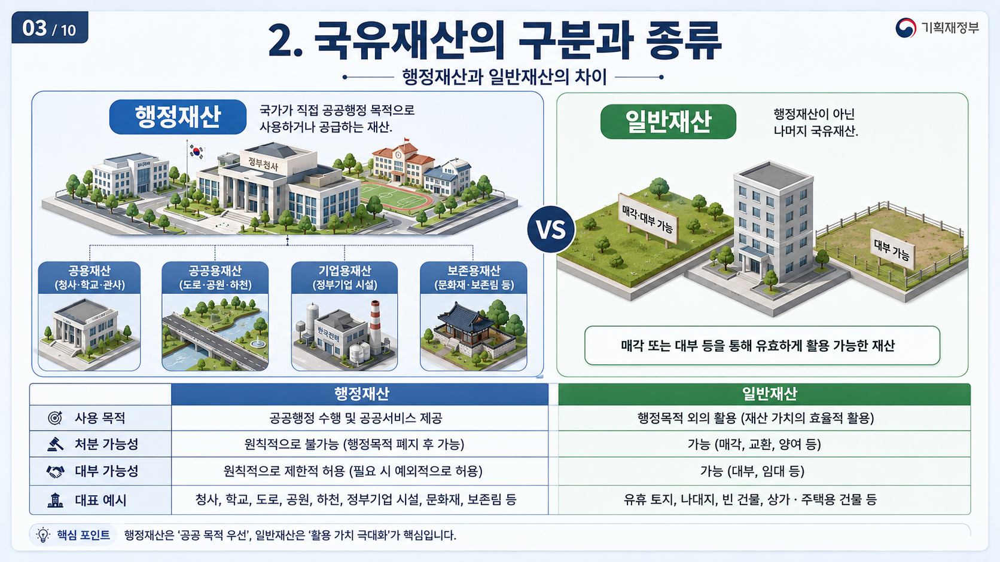
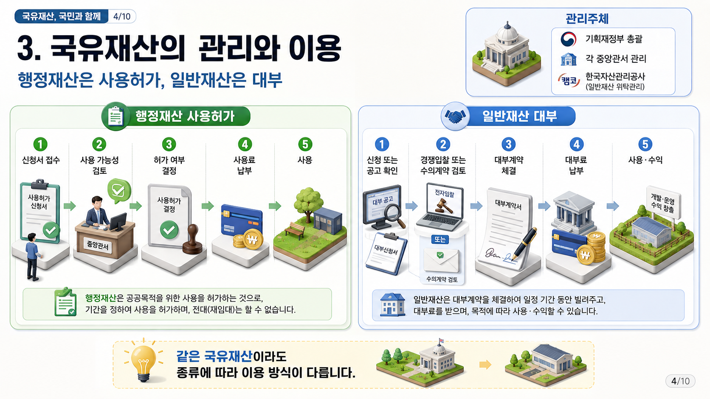
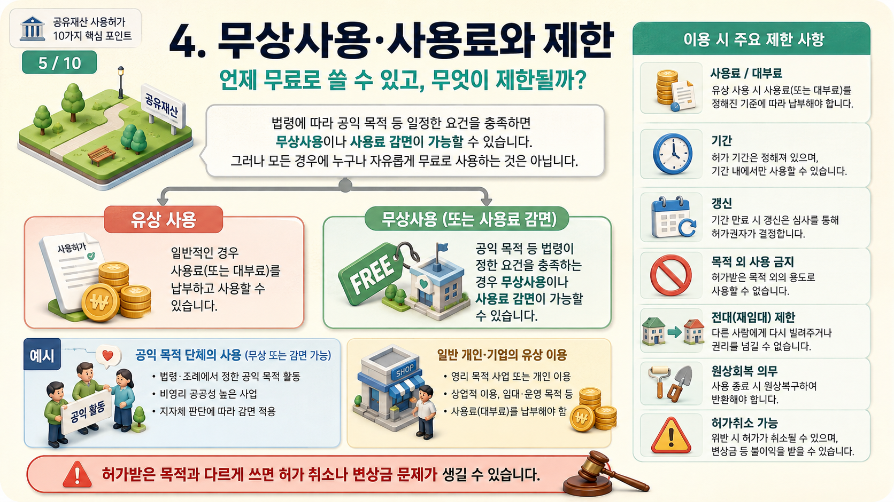
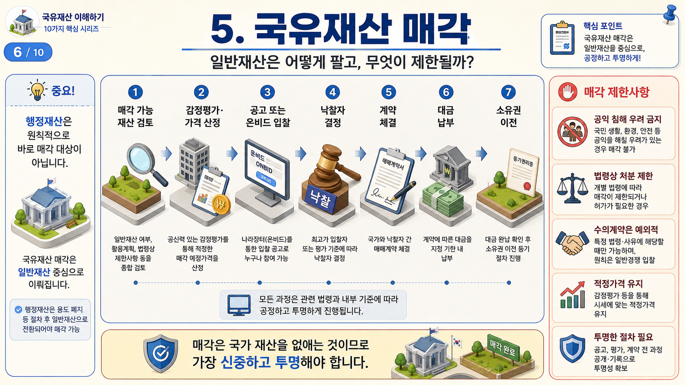

이 단원의 세부 목차
국유재산법 단원은 아래 항목을 한 흐름으로 묶어 공부합니다. 상위 개념을 먼저 잡고, 하위 주제를 차례로 확인하면 선택지 변형을 더 쉽게 읽을 수 있습니다.
서론: 국가 재산을 왜 따로 관리하는가
국유재산은 단순히 국가 명의로 된 땅이나 건물이 아닙니다. 정부청사, 도로, 공원, 항만, 문화재 부지, 국유 임야처럼 국민 생활과 공공서비스에 직접 연결되는 재산입니다.
따라서 국유재산은 사유재산처럼 마음대로 팔거나 빌려줄 수 없습니다. 먼저 행정 목적에 쓰이는 재산인지, 일반적으로 활용ㆍ처분할 수 있는 재산인지 구분하고, 그 다음 사용허가ㆍ대부ㆍ매각 가능성을 검토합니다.
국유재산법을 공부할 때에는 ‘어떤 재산인가, 누가 관리하는가, 국가 외의 자가 사용할 수 있는가, 돈을 받고 빌려줄 수 있는가, 매각할 수 있는가’의 순서로 읽으면 됩니다.
행정 목적에 직접 쓰이는 재산인지, 대부ㆍ매각이 가능한 일반재산인지 먼저 나눕니다.
국가는 재산대장에 등록하고, 현황을 조사하며, 처분이나 대부 시 가액을 산정합니다.
행정재산은 사용허가 중심, 일반재산은 대부계약과 매각 가능성을 중심으로 봅니다.
1. 국유재산법의 목적과 기본원칙
국유재산법은 국가가 소유한 부동산과 대통령령으로 정하는 동산, 예를 들어 기관차ㆍ전차ㆍ선박ㆍ항공기 등에 관한 사항을 규정합니다. 국가 재산을 적절히 보호하고 효율적으로 관리ㆍ처분하기 위해 재산의 범위, 구분, 종류, 관리기관, 처분기관 등을 정하는 것이 핵심입니다.
이 법의 기본 정신은 ‘국가 재산은 국민 전체의 재산에 가깝다’는 데 있습니다. 그래서 개별 기관의 편의나 단기 수익만 보지 않고, 공익성, 활용 가능성, 보존 필요성, 경제적 비용, 절차의 투명성을 함께 봅니다.
시험에서는 목적 조항보다 원칙을 사례에 적용하는 방식이 중요합니다. 예컨대 국가 소유 토지를 청년주택 부지로 활용할 수 있는지, 문화재 보존 가치가 큰 토지를 매각할 수 있는지처럼 공익과 효율을 함께 따지는 문제가 나올 수 있습니다.
| 기본원칙 | 쉽게 말하면 | 시험 포인트 |
|---|---|---|
| 국가 전체의 이익 | 개별 기관이나 개인의 편의보다 공익을 우선합니다. | 공공성 판단 |
| 취득ㆍ처분의 균형 | 필요한 재산은 확보하고, 불필요하거나 활용 가능한 재산은 효율적으로 씁니다. | 관리와 처분의 조화 |
| 공공 가치와 활용 가치 | 보존해야 할 재산과 활용할 재산을 구분합니다. | 행정재산ㆍ일반재산 연결 |
| 경제적 비용 | 관리비, 유지비, 활용 가능성을 함께 검토합니다. | 효율성 판단 |
| 투명하고 효율적인 절차 | 사용허가, 대부, 매각 절차를 공개적ㆍ합리적으로 진행합니다. | 입찰ㆍ수의계약 구분 |
2. 국유재산의 구분과 종류
국유재산법은 국가가 소유한 재산을 행정재산과 일반재산으로 구분합니다. 행정재산은 다시 공용재산, 공공용재산, 기업용재산, 보존용재산으로 세분됩니다.
행정재산이 아닌 나머지 국유재산은 일반재산입니다. 행정재산은 공익 목적에 묶여 있어 사용ㆍ처분이 제한되고, 일반재산은 대부ㆍ매각 가능성을 검토할 수 있다는 점이 가장 큰 차이입니다.
문제를 풀 때는 명칭을 외우기보다 ‘무엇에 쓰이는 재산인가’를 먼저 보아야 합니다. 청사는 공용재산, 도로ㆍ공원은 공공용재산, 공기업 사업용 시설은 기업용재산, 문화재 부지는 보존용재산으로 연결하면 쉽습니다.

| 구분 | 핵심 의미 | 대표 예시 |
|---|---|---|
| 공용재산 | 국가가 직접 청사ㆍ사무ㆍ사업ㆍ공무원 주거용으로 사용하는 재산 | 정부청사, 경찰서, 학교 |
| 공공용재산 | 국민 전체가 이용하는 시설로 제공되는 재산 | 도로, 공원, 하천, 공항 |
| 기업용재산 | 국가가 공기업 등 사업용으로 사용하는 재산 | 국영 철도, 공항 공단의 사업용 토지ㆍ시설 |
| 보존용재산 | 역사ㆍ문화ㆍ환경적 가치를 보존하기 위한 재산 | 문화재 부지, 자연유산 보전 부지, 군사보호 관련 부지 |
| 일반재산 | 행정재산 외의 국유재산 | 공공시설로 지정되지 않은 국가 소유 임야ㆍ택지 |
2.1 행정재산
행정재산은 국가가 직접 행정 목적을 위해 사용하거나 특정 공익을 위해 관리하는 재산입니다. 행정 목적이 붙어 있기 때문에 대부나 매각이 일반적으로 제한되고, 국가 외의 자가 사용할 때에도 사용 목적과 범위가 엄격하게 심사됩니다.
행정재산은 공용재산, 공공용재산, 기업용재산, 보존용재산으로 나뉩니다. 네 유형은 모두 ‘국가나 국민 전체의 공익적 필요’와 연결되어 있으므로, 일반재산처럼 자유롭게 처분하는 대상으로 보지 않습니다.
다만 법령에서 정하는 경우에는 일정 기간 사용허가나 대부가 가능할 수 있습니다. 예컨대 공공청사 안의 편의시설, 학교 운동장 사용, 공공시설 부속 공간 사용처럼 행정 목적을 해치지 않는 범위에서 허용되는 경우가 있습니다.
청와대, 정부청사, 경찰서, 학교처럼 청사ㆍ사무ㆍ사업ㆍ공무원 주거용으로 쓰는 재산입니다.
도로, 공원, 하천, 공항처럼 공공의 편의를 위해 제공되는 재산입니다.
국영 철도, 공항 공단 등의 사업용 토지ㆍ시설처럼 공기업 사업과 연결됩니다.
문화재 부지, 자연유산 보전 부지, 군사보호 관련 부지처럼 보존 목적이 강합니다.
- 행정재산은 특정 용도에 묶여 있으므로 사용허가 범위가 좁습니다.
- 행정재산은 원칙적으로 대부ㆍ매각이 제한됩니다.
- 행정 목적이 종료되면 용도폐지 후 일반재산으로 전환될 수 있습니다.
2.2 일반재산
일반재산은 행정재산 외의 모든 국유재산을 말합니다. 과거에는 보통재산이나 잡종재산이라는 표현도 사용되었지만, 2009년 법 개정 이후 일반재산이라는 명칭으로 정리되었습니다.
일반재산은 행정재산과 달리 대부, 사용허가, 매각이 가능할 수 있습니다. 예를 들어 국가 소유 임야나 택지가 아직 공공시설로 지정되지 않았고 보존 필요도 크지 않다면 일반재산으로 분류되어 활용이나 처분이 검토될 수 있습니다.
다만 일반재산이라고 해서 무조건 팔 수 있는 것은 아닙니다. 공공 필요, 장래 행정 목적, 보존 가치, 다른 법령상 제한이 있으면 매각이나 대부가 제한될 수 있습니다.
| 항목 | 행정재산 | 일반재산 |
|---|---|---|
| 기본 성격 | 행정 목적 또는 공익 목적에 직접 사용 | 행정재산 외의 국유재산 |
| 대표 예시 | 청사, 도로, 공원, 문화재 부지 | 공공시설로 지정되지 않은 국유 임야ㆍ택지 |
| 사용 방식 | 사용허가 중심 | 대부계약ㆍ매각 가능성 검토 |
| 처분 가능성 | 원칙적으로 제한 | 법령상 절차에 따라 가능 |
3. 국유재산의 관리
국유재산의 관리는 등록, 보존, 평가, 이용, 처분 절차로 나누어 볼 수 있습니다. 이 흐름을 알아야 사용허가, 대부, 무상사용, 매각 문제를 한 덩어리로 이해할 수 있습니다.
국가는 재산을 취득하면 장부와 재산대장에 등록하고, 정기적으로 현황을 조사합니다. 처분이나 대부가 필요하면 공시지가나 감정평가액 등을 기준으로 가액을 산정합니다.
이용 단계에서는 행정재산인지 일반재산인지에 따라 절차가 달라집니다. 행정재산은 사용허가, 일반재산은 대부계약이 중심입니다. 처분 단계에서는 일반재산 매각 가능성과 매각 제한을 함께 검토합니다.
- 취득 즉시 국가 회계 장부와 재산대장에 등록합니다.
- 정기 조사와 점검으로 훼손, 무단점유, 안전 문제를 확인합니다.
- 처분이나 대부가 필요하면 공시지가 또는 감정평가액을 기준으로 가액을 산정합니다.
- 행정재산은 사용허가 가능성을 검토합니다.
- 일반재산은 대부계약 또는 매각 가능성을 검토합니다.

3.1 등록과 보존
국유재산은 취득하는 즉시 국가 회계 장부에 등록하고 재산대장을 작성합니다. 재산대장에는 위치, 면적, 용도, 가액, 관리청 등 기본 정보가 기록됩니다.
등록은 단순 행정서류가 아니라 국가가 그 재산을 실제로 보호하고 관리하기 위한 출발점입니다. 등기부, 지적공부, 현황자료와 연결해 재산의 실체를 확인할 수 있어야 합니다.
보존 단계에서는 정기 조사와 점검이 중요합니다. 부동산의 유지보수, 환경보호, 안전관리, 훼손 여부, 무단점유 여부를 확인하여 국가 재산이 방치되거나 사적으로 점유되는 것을 막습니다.
취득 즉시 회계 장부와 재산대장에 위치ㆍ면적ㆍ용도ㆍ가액 등을 기록합니다.
정기 점검, 유지보수, 환경보호, 안전관리로 재산의 훼손을 막습니다.
행정재산은 해당 부처나 공공기관 등 관리청이 직접 관리 책임을 집니다.
3.2 평가와 가치 산정
국유재산을 대부하거나 매각하려면 재산가액을 산정해야 합니다. 대부료와 매각 예정가격은 모두 재산가액을 기초로 정해지므로 평가 단계가 매우 중요합니다.
일반적으로 토지는 공시지가나 감정평가액을 기준으로 하고, 건물이나 특수시설은 현황, 용도, 수익성, 감가상각 등을 함께 고려할 수 있습니다.
시험에서는 ‘가격 산정이 왜 필요한가’를 묻는 형태가 나올 수 있습니다. 국유재산은 공적 재산이기 때문에 임의로 싼값에 빌려주거나 팔 수 없고, 객관적 기준을 통해 공정성과 투명성을 확보해야 합니다.
| 평가가 필요한 경우 | 기준 자료 | 연결되는 절차 |
|---|---|---|
| 대부료 산정 | 재산가액, 대부료율 | 대부계약 체결 |
| 매각 예정가격 결정 | 공시지가, 감정평가액 | 입찰 공고ㆍ낙찰 |
| 사용료 산정 | 사용 면적, 기간, 재산가액 | 행정재산 사용허가 |
| 공익사업 관련 처분 | 보상액 또는 관계 법령상 산정액 | 사업시행자 처분 |
3.3 이용과 사용허가
국가 외의 자가 국유재산을 사용하려면 법에 따라 사용허가를 받거나 대부계약을 체결해야 합니다. 여기서 가장 중요한 구분은 행정재산과 일반재산입니다.
사용허가는 행정재산에 적용되는 제도입니다. 공공시설의 부속 시설 이용, 학교 운동장 사용, 공공청사 내 편의시설 사용처럼 행정 목적을 해치지 않는 범위에서 일정 기간 유상 또는 무상으로 사용하도록 허가하는 방식입니다.
대부계약은 일반재산을 대상으로 합니다. 국가 외의 자가 일정 기간 유상 또는 무상으로 사용ㆍ수익할 수 있도록 하는 계약이고, 법적 성격은 민법상 임대차와 유사하게 이해하면 쉽습니다.

| 구분 | 대상 재산 | 성격 | 쉬운 예시 |
|---|---|---|---|
| 사용허가 | 행정재산 | 공익 목적을 해치지 않는 범위의 행정적 허가 | 공공시설 부속 공간, 학교 운동장 사용 |
| 대부계약 | 일반재산 | 국가와 사용자가 체결하는 계약 | 국가 소유 택지ㆍ임야의 일정 기간 사용 |
| 무상사용 | 예외적 허용 | 공익성 있는 경우 기간ㆍ범위를 제한해 허용 | 공익사업, 사회복지ㆍ문화 목적 사용 |
3.3.1 사용허가 및 대부 절차
사용허가와 대부 절차는 신청, 심사, 입찰 또는 수의계약, 계약 체결과 사용료 납부의 흐름으로 이해하면 됩니다. 행정재산은 목적 적합성 심사가 특히 중요하고, 일반재산 대부는 경쟁입찰이 원칙입니다.
일반재산 대부는 보통 온비드와 같은 공공자산 입찰 시스템을 통해 경쟁입찰로 진행됩니다. 다만 법령이 정한 특정 사유가 있으면 수의계약이 허용될 수 있습니다.
대부료는 보통 재산가액에 대부료율을 곱해 산정합니다. 무상대부나 무상사용은 예외이므로 반드시 법령상 근거와 공익성을 확인해야 합니다.
- 신청: 사용하려는 자가 관할 관리청이나 한국자산관리공사 등에 신청합니다.
- 심사: 사용 목적, 공공용도 충돌 여부, 행정 목적 침해 여부를 검토합니다.
- 입찰 또는 수의계약: 일반재산 대부는 경쟁입찰이 원칙이고, 예외적으로 수의계약이 가능합니다.
- 계약 체결: 낙찰자 또는 허가 대상자가 계약을 체결합니다.
- 사용료ㆍ대부료 납부: 재산가액과 요율 등을 기준으로 산정한 금액을 납부합니다.
3.3.2 무상사용
무상사용은 국유재산을 돈을 받지 않고 사용하게 하는 제도이므로 예외적으로만 허용됩니다. 국유재산은 국민 전체의 재산이므로, 특정인에게 무상으로 사용하게 하려면 공익성과 법적 근거가 필요합니다.
예를 들어 지방자치단체나 공공기관이 공익사업을 위해 필요한 경우, 사회복지시설이나 문화시설이 국가 시설을 공익적으로 활용하는 경우에는 법령이 정한 범위에서 무상사용이 문제될 수 있습니다.
무상사용은 기간, 범위, 목적이 제한됩니다. 허가 목적과 달리 사용하거나 공익성이 사라지면 허가 취소나 사용 중지 문제가 생길 수 있습니다.
- 무상사용은 원칙이 아니라 예외입니다.
- 공익 목적과 법령상 근거가 필요합니다.
- 기간과 범위가 제한됩니다.
- 목적 외 사용은 허가 취소나 원상회복 문제로 이어질 수 있습니다.
3.4 매각과 처분
국유재산 중 일반재산은 법령상 절차를 거쳐 매각될 수 있습니다. 매각은 국가 소유권을 사인이나 다른 기관에 이전하는 것이므로, 공정한 가격 산정과 공개 절차가 중요합니다.
일반적인 절차는 매각 계획 수립, 입찰 공고, 입찰과 낙찰자 선정, 매매계약 체결, 대금 납부와 소유권 이전의 흐름으로 진행됩니다.
매각 대금은 원칙적으로 일시금 납부가 기본이며, 공개경쟁입찰이 원칙입니다. 다만 법령이 정한 경우에는 수의계약이나 특례가 허용될 수 있습니다.
- 매각 계획 수립: 매각 대상 재산과 예정가격을 정합니다.
- 공공 필요 검토: 장래 행정 목적, 보존 가치, 다른 법령상 제한을 확인합니다.
- 입찰 공고: 공개경쟁입찰을 원칙으로 공고합니다.
- 입찰 및 낙찰자 선정: 온비드 등을 통해 가격을 제출하고 낙찰자를 정합니다.
- 매매계약 체결과 대금 납부: 대금을 납부한 뒤 소유권 이전 절차로 나아갑니다.

3.4.1 매각의 제한
행정재산은 원칙적으로 매각이 제한됩니다. 행정 목적에 쓰이는 재산을 함부로 팔면 국가 기능이나 국민 이용에 문제가 생기기 때문입니다.
행정 목적이 종료되어 더 이상 공용ㆍ공공용ㆍ기업용ㆍ보존용으로 쓸 필요가 없다면 용도폐지 후 일반재산으로 전환될 수 있고, 그 이후에야 매각 가능성을 검토할 수 있습니다.
문화재, 환경보전용 재산, 군사보호 관련 재산처럼 보존 가치가 큰 재산은 일반재산으로 전환되기 어렵거나 매각이 사실상 제한될 수 있습니다. 대부 중인 일반재산을 매각할 때에는 대부받은 자에게 우선매수권 등 특례가 문제될 수 있습니다.
| 제한 사유 | 이유 | 시험 판단 |
|---|---|---|
| 행정재산 | 행정 목적과 공익 기능이 붙어 있음 | 원칙적으로 매각 제한 |
| 보존 가치 | 문화ㆍ환경ㆍ안보상 보존 필요 | 처분보다 보존 우선 |
| 공공 필요 | 장래 공공시설이나 정책 목적에 필요 | 매각 대상 제외 가능 |
| 대부 중 재산 | 기존 사용자와의 관계 고려 | 우선매수권 등 특례 검토 |
4. 국유재산의 변천과 최신 동향
국유재산법은 1950년 제정 이후 여러 차례 전면 개정과 부분 개정을 거쳐 왔습니다. 특히 2009년 개정에서는 행정ㆍ보존재산과 잡종재산의 구분을 행정재산과 일반재산으로 단순화하고, 행정재산 안에 보존용재산을 포함시켰습니다.
이 변화는 잡종재산이라는 명칭이 주는 부정적 이미지와 행정재산ㆍ보존재산 구분의 실익 문제를 정리하려는 흐름과 연결됩니다. 따라서 시험에서는 과거 용어인 잡종재산을 현재의 일반재산과 연결해 이해해야 합니다.
최근에는 국유재산을 단순 보유 재산으로 보지 않고 공공정책 자원으로 활용하려는 흐름이 강합니다. 지방자치단체와 민간 협력을 통한 청년주택, 공공임대사업, 생활SOC, 공공청사 복합개발 등이 대표적입니다.
또한 디지털 기술을 활용해 국유재산 통합포털에서 재산 정보를 공개하고, 온비드 등 공공자산 입찰 시스템을 통해 국민 접근성과 절차의 투명성을 높이는 방향으로 발전하고 있습니다.
5. 결론: 국유재산법을 읽는 핵심 순서
국유재산법은 국가가 보유한 재산을 행정재산과 일반재산으로 구분하고, 행정재산을 공용ㆍ공공용ㆍ기업용ㆍ보존용재산으로 세분하여 공공 목적에 우선적으로 활용하도록 합니다.
일반재산은 대부, 사용허가, 매각이 가능할 수 있지만 국가 전체의 이익과 공공성을 고려한 엄격한 절차를 거쳐야 합니다. 따라서 국유재산 문제는 ‘어떤 재산인가 → 누가 관리하는가 → 사용할 수 있는가 → 매각할 수 있는가 → 어떤 절차와 제한이 있는가’의 순서로 읽어야 합니다.
건축법과 함께 볼 때에는 국가 소유 토지를 누가 사용할 수 있는지 먼저 국유재산법으로 확인하고, 그 토지 위에 어떤 건축물을 어느 규모로 지을 수 있는지는 국토계획법과 건축법으로 다시 확인합니다.
| 판단 순서 | 국유재산법상 질문 | 연결 법령 |
|---|---|---|
| 1단계 | 행정재산인가 일반재산인가 | 국유재산법 |
| 2단계 | 사용허가ㆍ대부ㆍ무상사용이 가능한가 | 국유재산법, 개별 특례법 |
| 3단계 | 매각이나 처분이 가능한가 | 국유재산법, 공익사업 관련 법령 |
| 4단계 | 건물을 지을 수 있는 토지인가 | 국토계획법, 건축법 |
| 5단계 | 허가ㆍ신고와 안전 기준을 충족하는가 | 건축법, 소방ㆍ주차장 관련 법령 |
상세 강의 해설
국유재산법은 부동산관계법규에서 독립적으로 외울 항목이 아니라, 사례를 읽는 순서와 판단 기준을 함께 익혀야 하는 주제입니다. 이 단원은 국유재산의 유형과 관리, 사용ㆍ대부, 무상사용, 매각 절차와 제한 같은 하위 주제로 이어지므로, 큰 제목을 먼저 잡고 세부 주제를 내려가며 읽는 것이 좋습니다.
먼저 국유재산법은 국가 소유 재산의 보호, 관리, 활용, 처분 기준을 정합니다. / 국유재산은 행정재산과 일반재산으로 나뉘고, 행정재산은 공용ㆍ공공용ㆍ기업용ㆍ보존용재산으로 세분됩니다. / 행정재산은 공익 목적이 강해 대부ㆍ매각이 제한되고, 일반재산은 대부ㆍ매각 가능성을 검토할 수 있습니다.를 한 묶음으로 잡으세요. 그런 다음 사례에서 사실관계를 읽고, 어느 요건이 충족되었는지 표시하면 긴 선택지도 짧은 판단 문제로 바뀝니다.
부동산관계법규는 토지를 실제로 어떻게 이용할 수 있는지 판단하는 법령 묶음입니다. 같은 토지라도 용도지역, 허가 여부, 공부상 표시, 건축 가능성, 농지ㆍ산지 제한에 따라 보상평가와 사업 진행 가능성이 달라집니다.
기출형 선택지에서는 행정재산과 일반재산의 차이를 가장 먼저 구분합니다. / 공용재산, 공공용재산, 기업용재산, 보존용재산의 예시를 비교합니다.처럼 주체, 요건, 효과 중 하나만 바꾸는 방식이 자주 쓰입니다. 따라서 정답을 고른 뒤에도 틀린 선택지가 왜 틀렸는지 한 줄로 적어 두는 것이 좋습니다.
각 법령을 공부할 때는 정의, 지정ㆍ허가권자, 절차, 제한 효과, 위반 시 처리 순서로 정리하세요. 시험 선택지는 법률명은 맞게 두고 주체나 효과만 바꾸는 경우가 많아, 표로 비교해 두면 오답을 빠르게 거를 수 있습니다.
핵심 개념
- 국유재산법은 국가 소유 재산의 보호, 관리, 활용, 처분 기준을 정합니다.
- 국유재산은 행정재산과 일반재산으로 나뉘고, 행정재산은 공용ㆍ공공용ㆍ기업용ㆍ보존용재산으로 세분됩니다.
- 행정재산은 공익 목적이 강해 대부ㆍ매각이 제한되고, 일반재산은 대부ㆍ매각 가능성을 검토할 수 있습니다.
- 사용허가는 행정재산, 대부계약은 일반재산을 중심으로 구별합니다.
- 국유재산 관리는 등록, 보존, 평가, 사용허가ㆍ대부, 매각ㆍ처분 절차로 읽습니다.
시험 포인트
- 행정재산과 일반재산의 차이를 가장 먼저 구분합니다.
- 공용재산, 공공용재산, 기업용재산, 보존용재산의 예시를 비교합니다.
- 사용허가와 대부계약의 대상 재산을 혼동하지 않습니다.
- 행정재산은 원칙적으로 매각이 제한된다는 점을 기억합니다.
- 용도폐지 후 일반재산 전환 여부를 매각 가능성 판단과 연결합니다.
복습 질문
- 국유재산법에서 가장 먼저 확인해야 할 기준은 무엇인가요?
- 이 단원이 부동산관계법규의 다른 단원과 연결되는 지점은 어디인가요?
- 기출 선택지에서 주체, 요건, 효과 중 무엇을 바꾸면 오답이 되나요?
연결 학습
이 단원을 읽은 뒤에는 문제풀이 페이지에서 같은 과목을 선택해 5문항 이상 풀어 보세요. 정답보다 중요한 것은 선택지마다 근거를 붙이는 연습입니다.